Kamienie naturalne
Krąg wiedzy
Agat
mistrz harmonii!
Agat to niezwykły minerał, którego charakterystyczne, warstwowe wzory (wstęgi) symbolizują harmonię i złożoność ludzkiego życia. Jego energia działa powoli, ale niezwykle stabilnie, wprowadzając do codzienności spokój oraz poczucie bezpieczeństwa.
- Sfera emocjonalna i mentalna: Skutecznie koi nerwy, dodaje odwagi, wzmacnia pewność siebie i napełnia optymizmem. Pomaga przełamywać wewnętrzne blokady, ułatwiając otwarcie się na nowe doświadczenia. Dodatkowo wyostrza koncentrację, wspiera logiczne myślenie i ułatwia podejmowanie trudnych decyzji bez ulegania silnym emocjom.
- Ochrona i relacje: Tworzy wokół właściciela tarczę ochronną przed negatywnymi wpływami z otoczenia. W dawnych czasach był ceniony jako talizman podróżników, chroniący przed nieszczęściem w drodze. Wspiera też otwartą i szczerą komunikację, łagodząc konflikty w relacjach.
- Witalność i ciało: Wzmacnia zarówno siłę psychiczną, jak i fizyczną, dodając energii do działania. W tradycji litoterapii przypisuje się mu korzystny wpływ na układ pokarmowy (łagodzenie problemów żołądkowych), wspieranie równowagi hormonalnej, a także łagodzenie napięć i bólu głowy.
Astrologia i żywioły
- Żywioł: Ziemia (daje silne uziemienie i stabilizację).
- Kompatybilne znaki zodiaku: Najlepiej rezonuje z Bykiem, Bliźniętami oraz Panną. Doskonale wspiera także Skorpiona i Koziorożca.

Akwamaryn
klejnot wiecznej młodości i szczęścia!
Akwamaryn to niezwykły minerał o barwie morskiej wody, który od wieków symbolizuje czystość, harmonię i wewnętrzną wolność. Jego łagodna, ale potężna energia działa jak kojąca fala – wycisza emocje, przynosi ulgę w stresie i pozwala złapać głęboki oddech w trudnych chwilach.
- Sfera emocjonalna i mentalna: Skutecznie oczyszcza umysł z natłoku negatywnych myśli i porządkuje wewnętrzny chaos. Wzmacnia aurę oraz poszerza świadomość, pomagając spojrzeć na swoje problemy z dystansu. Dodaje odwagi do stawiania czoła wyzwaniom, uwalnia od lęków i uczy akceptacji zmian w życiu.
- Komunikacja i relacje: Jako kamień silnie powiązany z czakrą gardła, ułatwia swobodne, szczere i spokojne wyrażanie swoich uczuć oraz myśli. Pomaga przełamać nieśmiałość, wspiera podczas wystąpień publicznych i łagodzi napięcia w relacjach. Dawniej był uznawany za najważniejszy talizman żeglarzy, chroniący przed niebezpieczeństwem podczas podróży.
- Witalność i ciało: W tradycji litoterapii przypisuje się mu działanie łagodzące na organizm. Wspiera walkę z problemami skórnymi, koi objawy alergii oraz pomaga redukować napięciowe bóle głowy i migreny. Korzystnie wpływa także na gardło, struny głosowe oraz układ oddechowy.
Astrologia i żywioły
- Żywioł: Woda (przynosi ukojenie, oczyszczenie i płynność emocjonalną).
- Kompatybilne znaki zodiaku: Najlepiej rezonuje z Rybami, Wodnikiem oraz Bliźniętami. Doskonale wspiera także Barana i Wagę.
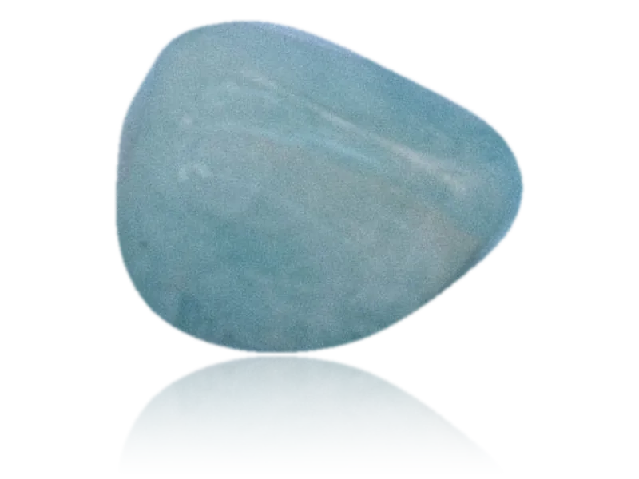
Amazonit
bohaterka kobiet, strażniczka równowagi!
Amazonit to wyjątkowy minerał o kojącej, turkusowo-zielonej barwie, którego nazwa nawiązuje do walecznych i niezależnych Amazonek. Łączy w sobie delikatność z ogromną wewnętrzną siłą, działając jak tarcza chroniąca przed przebodźcowaniem i codziennym napięciem.
- Sfera emocjonalna i mentalna: Skutecznie redukuje stres, łagodzi lęki oraz głęboko harmonizuje emocje, przynosząc ulgę w stanach niepokoju i zmartwień. Pomaga zachować spokój w trudnych sytuacjach, uczy zdrowego dystansu i wspiera w przełamywaniu lęku przed oceną innych.
- Kobieca energia, relacje i dobrobyt: Szczególnie dobrze rezonuje z kobiecą energią – stanowi ogromne wsparcie w budowaniu poczucia własnej wartości, niezależności oraz wewnętrznej mądrości. Ułatwia szczerą komunikację płynącą prosto z serca i pomaga stawiać zdrowe granice w relacjach. W tradycji ezoterycznej uchodzi także za kamień przyciągający szczęście, pomyślność i dobrobyt, zwłaszcza przy podejmowaniu nowych wyzwań zawodowych.
- Witalność i ciało: W litoterapii przypisuje się mu działanie odprężające na układ nerwowy i mięśniowy. Pomaga rozluźnić napięcia w okolicach karku i ramion, wspiera spokojny sen, a także korzystnie wpływa na gospodarkę wapniową organizmu, tarczycę oraz równowagę metaboliczną.
Astrologia i żywioły
- Żywioł: Ziemia oraz Woda (łączy uziemiającą stabilność z kojącą płynnością emocji).
- Kompatybilne znaki zodiaku: Najlepiej rezonuje z Panną, Wodnikiem oraz Rybami. Doskonale wspiera także Raka i Lwa.
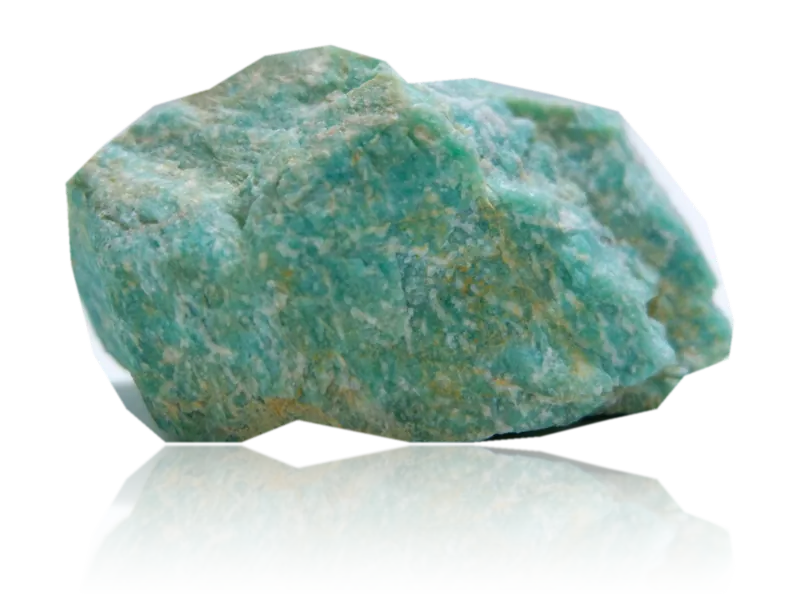
Ametyst
kamień harmonii, duchowej ochrony i spokojnego umysłu
Ametyst to jeden z najbardziej cenionych minerałów na świecie, zachwycający głęboką, fioletową barwą. Od starożytności symbolizuje czystość ducha, mądrość oraz wewnętrzny spokój. Jego wysoka, kojąca wibracja działa jak balsam dla przebodźcowanego umysłu, pomagając odnaleźć ciszę po intensywnym dniu.
- Sfera emocjonalna i mentalna: Skutecznie wycisza gonitwę myśli, redukuje niepokój, lęki oraz objawy przewlekłego stresu. Przynosi emocjonalną równowagę, łagodzi gniew i rozdrażnienie. Ułatwia wejście w stan głębokiego relaksu i medytacji, rozwijając intuicję oraz pomagając podejmować trzeźwe, przemyślane decyzje.
- Ochrona i siła woli: Tworzy silną tarczę energetyczną, która oczyszcza aurę i chroni przed negatywnymi wpływami z otoczenia. Tradycyjnie uznawany jest za kamień trzeźwości – wspiera silną wolę i pomaga w wyzwalaniu się z nałogów, niezdrowych nawyków oraz destrukcyjnych schematów myślowych.
- Witalność i ciało: W litoterapii ceniony jest przede wszystkim za działanie kojące na układ nerwowy. Pomaga łagodzić uciążliwe migreny oraz napięciowe bóle głowy. Wspiera także zdrowy, głęboki sen, chroni przed bezsennością i koszmarami, a dodatkowo korzystnie wpływa na regenerację organizmu oraz układ odpornościowy.
Astrologia i żywioły
- Żywioł: Powietrze oraz Woda (łączy jasność umysłu i duchowość z głębokim wyciszeniem emocji).
- Kompatybilne znaki zodiaku: Najlepiej rezonuje z Rybami, Wodnikiem oraz Panną. Doskonale wspiera także Strzelca i Koziorożca.

Apatyt
mistrz motywacji!
Apatyt to niezwykle energetyzujący minerał, który zachwyca głębokimi odcieniami błękitu i zieleni. Uznawany jest za kamień przyszłości i osobistego rozwoju – skutecznie rozprasza apatię, przegania zwątpienie i budzi wewnętrzny ogień do działania.
- Sfera emocjonalna i mentalna: Dodaje potężnej dawki motywacji, wzmacnia pozytywne nastawienie do życia i stymuluje kreatywność. Pomaga uwolnić się od blokad energetycznych oraz prokrastynacji, ułatwiając wyznaczanie celów i śmiałe spełnianie marzeń. Wyostrza także koncentrację, wspiera jasność myślenia i ułatwia przyswajanie wiedzy.
- Komunikacja i relacje: Jako kamień silnie związany z czakrą gardła, usprawnia komunikację między ludźmi i ułatwia swobodną samoekspresję. Zmniejsza lęk przed wystąpieniami publicznymi, pomaga otworzyć się na innych i wspiera budowanie szczerych, harmonijnych relacji – zarówno towarzyskich, jak i zawodowych.
- Witalność i ciało: W tradycji litoterapii przypisuje się mu korzystny wpływ na pamięć oraz funkcjonowanie układu nerwowego. Pomaga regulować ciśnienie krwi, wspiera metabolizm i zdrowe nawyki żywieniowe, a także sprzyja regeneracji organizmu, kości i stawów (ze względu na naturalną zawartość fosforanu wapnia).
Astrologia i żywioły
- Żywioł: Powietrze oraz Woda (łączy lekkość, intelekt i komunikację z głębią inspiracji).
- Kompatybilne znaki zodiaku: Najlepiej rezonuje z Bliźniętami, Wodnikiem oraz Wagą. Doskonale wspiera także Strzelca i Ryby.
Awenturyn
magiczny klucz do świata możliwości!
Przyciąga szczęście, dobrobyt i obfitość, szczególnie w sprawach finansowych. Przynosi szczęście i otwiera na nowe możliwości. Pomaga żyć w harmonii, obfitości i spokoju.
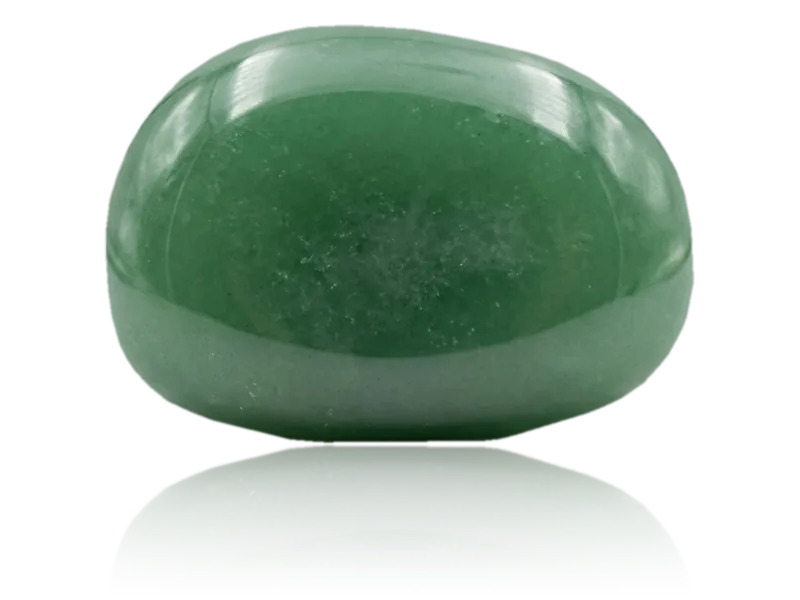
Bawole oko
Uziemiający kamień, przyciągający obfitość i ochronę Wpływa na poczucie bezpieczeństwa i pewności siebie. Oddala od nas wątpliwości i negatywne myśli. Pobudza pracowitość, zaradność i wytrzymałość na sytuacje stresowe.
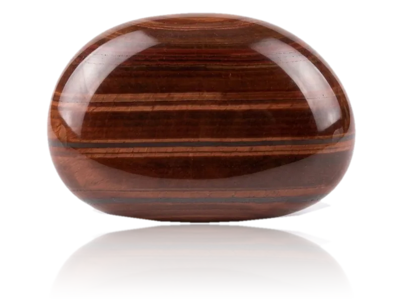
Black stone
kamień zdeterminowanych
Potężny talizman ochronny, który wzmacnia siłę woli, pewność siebie i odporność na stres. Zwiększa determinację i zdolność do podejmowania trudnych decyzji.
Chryzokola
kamień spokoju i kobiecej energii
Wzmacnia kobiecą energię, dodaje cierpliwości i uspokaja. Negatywne myśli zamienia na pozytywną energię. Poprawia nastrój, łagodzi niepokój, wspomaga prawidłowe działanie tarczycy i korzystnie wpływa na przebieg ciąży.
Cytryn
Opis tego kamienia pojawi się wkrótce.
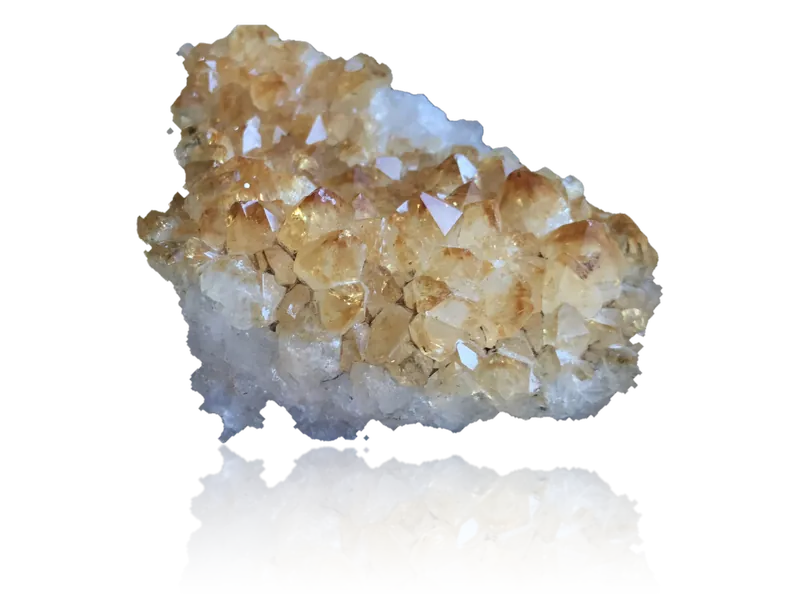
Granat
klejnot silnej energii
Działa silnie regenerująco, przynosi harmonię. Uważany za kamień miłości, umacnia wierność i zaufanie w związkach. Pozwala odnaleźć swoją pasję. Pomocny w leczeniu depresji, wspomaga pracę nerek i serca.
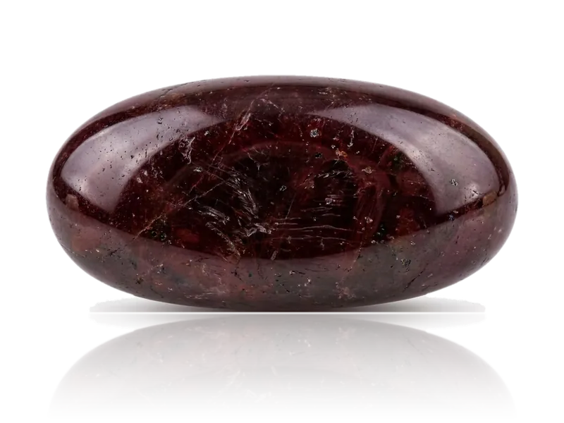
Jadeit
kamień mądrości
Równoważy emocje, przynosi spokój i pomaga w podejmowaniu decyzji. Odpiera uroki i złą energię, chroni przed wypadkami oraz sprzyja długowieczności. Dodaje pewności siebie i optymizm. Wspomaga usuwanie toksyn, łagodzi bóle kręgosłupa.
Jaspis
królowa wśród kamieni
Działa antystresowo, koi, uspokaja i wspiera, pomaga uwolnić się od stresu i konfliktów. Ułatwia kontakty międzyludzkie. Chroni przed negatywną energią,
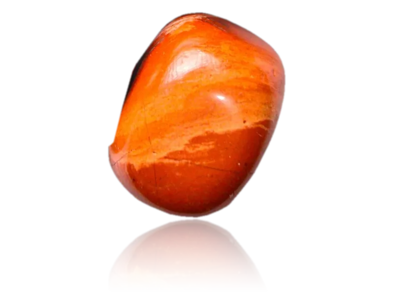
Kamień górski
kamień oczyszczający
Uważany za najsilniejszy kamień oczyszczający i ochronny, działający jak energetyczna tarcza. Wyostrza zmysły i emocje, pobudza dobre myśli. Pomocny w problemach skórnych.
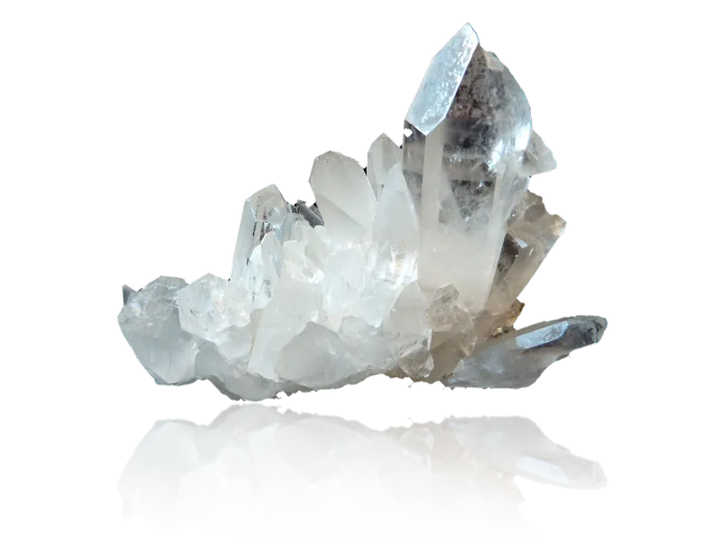
Kamień słoneczny
pozytywna bateria
Minerał radości i pozytywnej energii, który dodaje optymizmu i pewności siebie. Wspiera w stanach obniżonego nastroju. Energetyzuje i pobudza do działania.
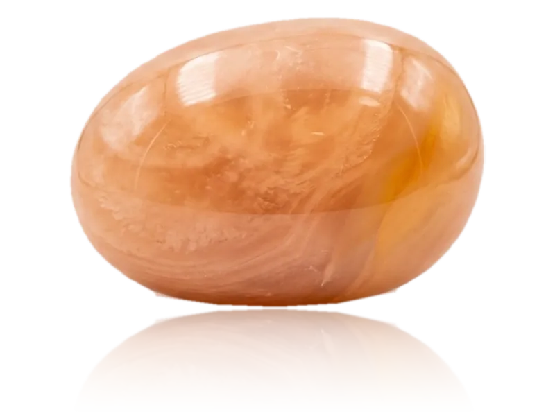
Karneol
kamień turbo-mocy!
Energetyzuje, motywuje, dodaje odwagi i wzmacnia ambicję. Wspiera aktywność i działanie w każdej sferze życia. Wzmacnia witalność, poprawia krążenie krwi i wspomaga metabolizm.
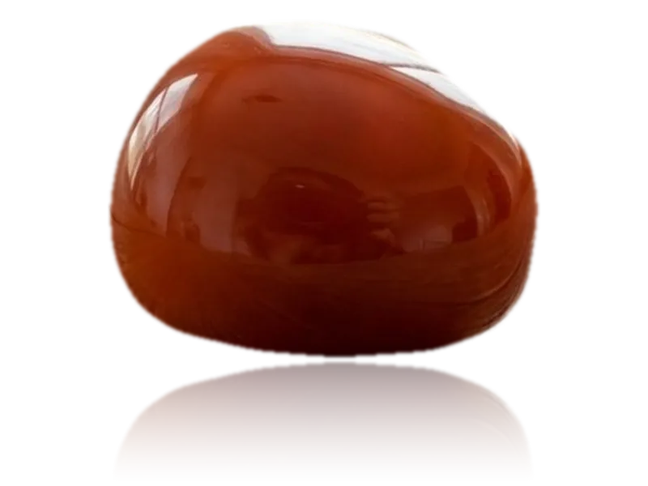
Lapis lazuli
boski twór
Kamień duchowy, silnie inspiruje, przynosi harmonię. Łagodzi stres. Wzmacnia on układ odpornościowy i wspomaga dobry i zdrowy sen.
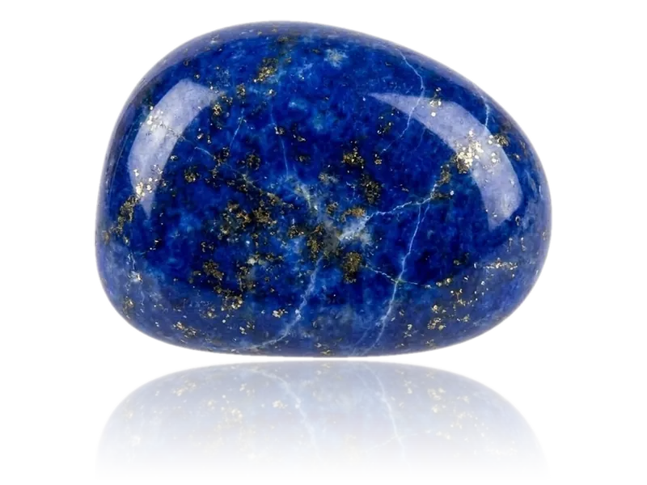
Lawa wulkaniczna
gorący przewodnik
Pomaga w odzyskaniu równowagi psychicznej, stabilizuje emocje i ułatwia "uziemienie". Pomaga pokonywać trudności uwolnić się od negatywnych emocji i toksycznych nawyków.
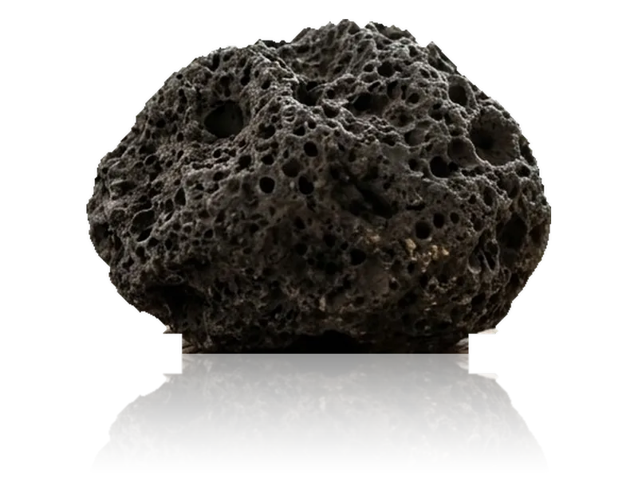
Obsydian
niszczyciel demonów przeszłości
Potężny kamień ochronny, który absorbuje negatywną energię. Pomaga uwalniać zablokowane emocje i traumy oraz zwiększa jasność umysłu. Otwiera na nową wiedzę i doświadczenia.
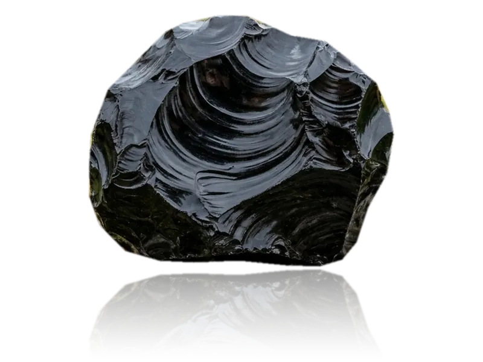
Onyks
klejnot magów i czarnoksiężników
Kamień siły, ochrony i równowagi emocjonalnej. Wspiera rozwój duchowy, przynosi harmonię i balans. Pomaga redukować stres, poprawiać koncentrację i przyciągać szczęście.
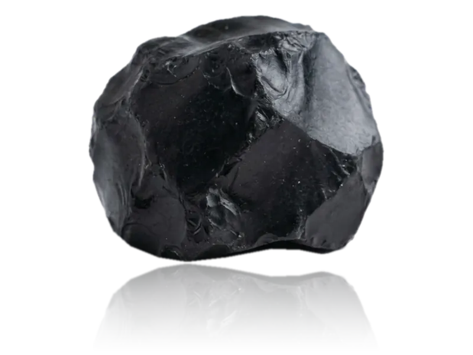
Opal
kamień przewodnik
Pomaga znaleźć właściwą ścieżkę życiową. Przynosi spokój i równowagę energetyczną. Dodaje kreatywności i szczęścia. Korzystnie wpływa na układ odpornościowy.

Rodonit
kamień leczący serce
Wspiera w procesie budowania bezwarunkowej miłości, empatii i umiejętności wybaczania sobie i innym. Sprzyja budowaniu zdrowych więzi i otwieraniu się na innych ludzi.
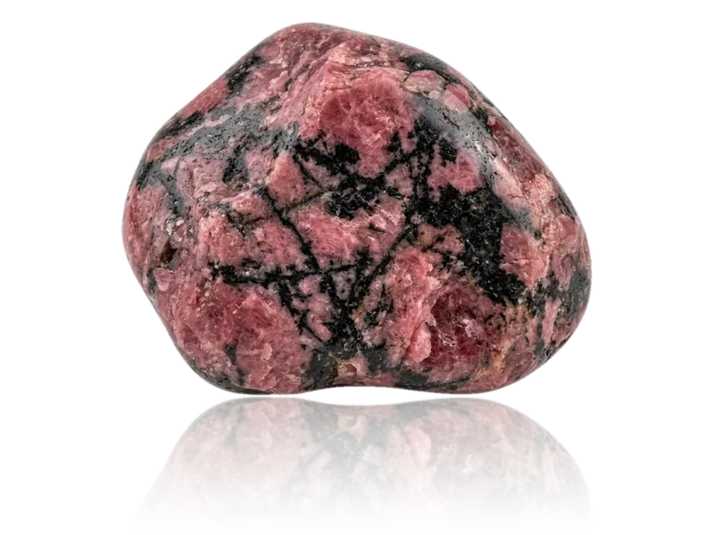
Rubin
klejnot serca
Jest symbolem namiętności, pożądania i miłości. Wzmacnia energię i siłę życiową. Dodaje optymizmu i odwagi do kierowania własnym życiem. Wspiera prawidłowe działanie serca.
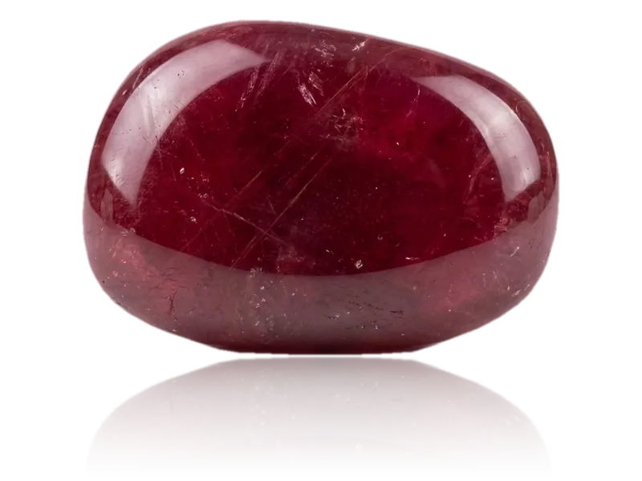
Turmalin
Opis tego kamienia pojawi się wkrótce.
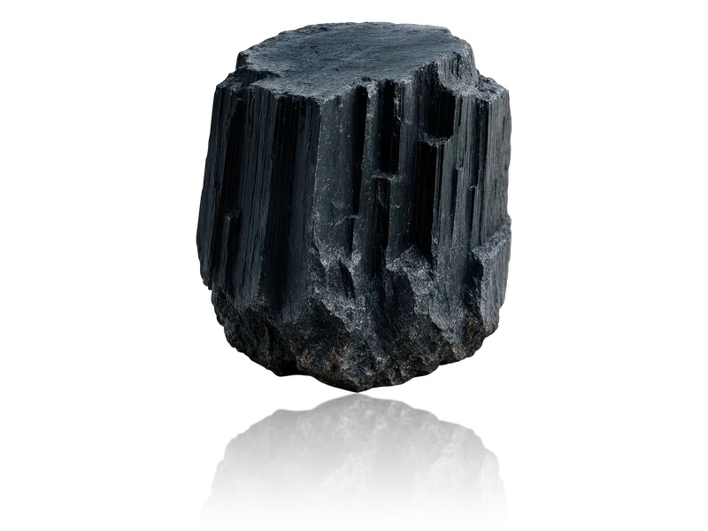
Tygrysie oko
amulet rekinów biznesu!
Chroni przed negatywnymi wpływami i złą energią wampirów energetycznych. Wsparcie w biznesie i karierze. Przynosi szczęście i optymizm. Uwalnia od kompleksów i dodaje pewności siebie.
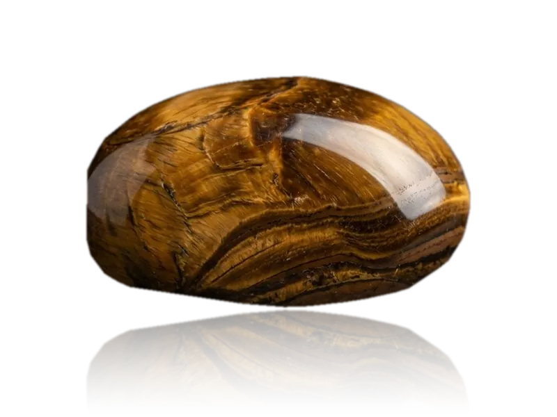
Unakit
Kamień uwolnienia
Wspomaga osiągnięcie równowagi. Wspiera harmonię emocjonalną. Pomaga również w spełnieniu marzeń. Wyzwala wewnętrzną moc i pewność siebie. Uważany za kamień długotrwałych, szczęśliwych relacji.
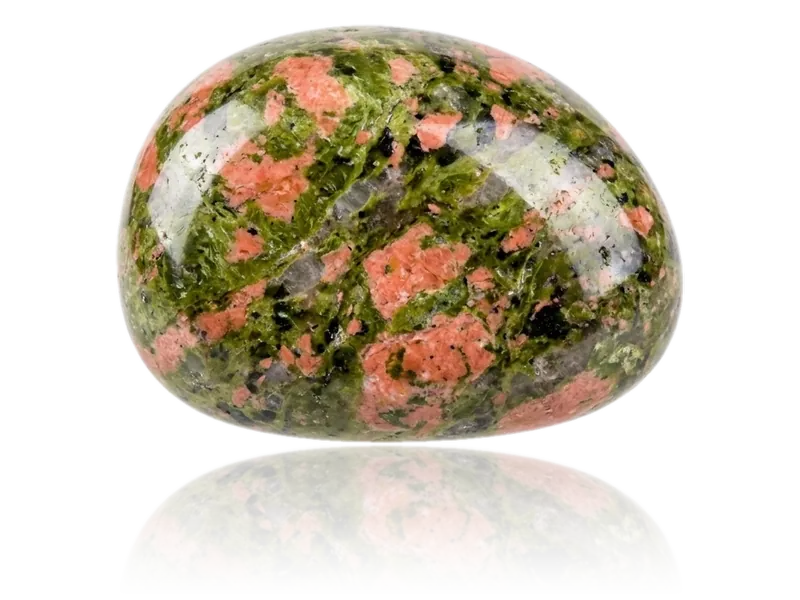
Nie znaleziono pasującego kamienia.